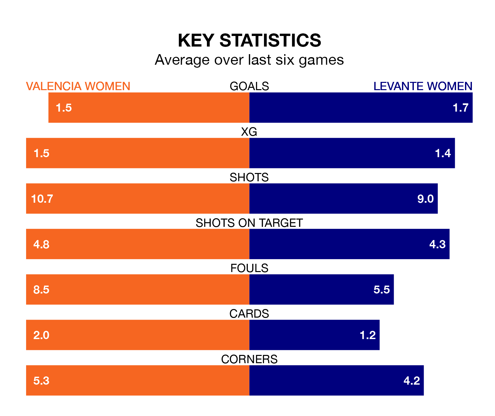

Levante Women travel to the Estadio Antonio Puchades for Sunday's match against Valencia Women looking to bounce back from defeat last time out in Liga F.
Levante, who sit third in the league after 22 games, fell to a 5-0 home defeat to Barcelona Women on March 31.
They face a Valencia side who also lost their last match, a 1-0 defeat to Atletico Madrid Women, and who sit 10th in the table.
With 27 goals in 22 games so far this season, Valencia are scoring at below the league average rate with 1.2 goals per game. And they are conceding more than average, letting in 47 goals at a rate of 2.1 per game.
Levante, meanwhile, are above average scorers, with 1.8 goals per game, compared to a league average of 1.6. They have conceded 0.8 goals per game.
With Emma Holmgren between the sticks, the visitors can rely on one of the league's safest pair of hands. She has kept seven clean sheets in her 14 appearances this season, and only one other 'keeper – Barcelona Women's Catalina Thomas Coll Lluch – has been able to prevent the opposition scoring on more occasions in Liga F.
In the home team's net, Antonia Ignacia Canales Pacheco has two clean sheets in 15 games. She has conceded a goal every 49 minutes, three times as often as the 158 minutes between goals for Holmgren.
In the last 10 years, Valencia and Levante have played each other on 18 occasions. Valencia won five of them, Levante eight, and they drew five times.
On average, Valencia scored 1.4 goals and Levante 1.2 in those matches.
Their last meeting was on November 12, when Levante won 3-1 at home.
Valencia are in mixed form in Liga F, with two wins and a draw from their last six games.
With a win and three draws over that period, Levante's form is slightly worse – they have taken six points from 18, compared to Valencia's seven.
Updated: 11:20 (UTC), 09/04/24